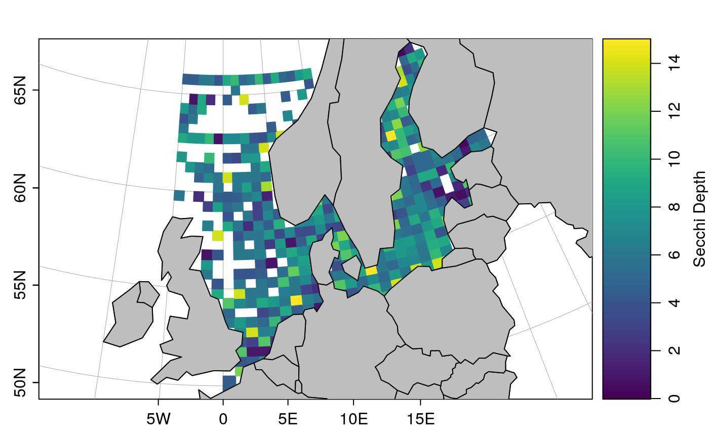

The function FUN is applied to f in bins specified by
xbreaks and ybreaks. (If FUN is mean(),
consider using binMean2D() instead, since it should be faster.)
binApply2D(x, y, f, xbreaks, ybreaks, FUN, ...)
| x | a vector of numerical values. |
|---|---|
| y | a vector of numerical values. |
| f | a vector of data to which the elements of |
| xbreaks | values of |
| ybreaks | as |
| FUN | univariate function that is applied to the |
| ... | arguments to pass to the function |
A list with the following elements: the breaks in x and
y (i.e. xbreaks and ybreaks), the break mid-points
(i.e. xmids and ymids), and a matrix containing the
result of applying FUN() to the f values, as
subsetted by these breaks.
Other bin-related functions:
binApply1D(),
binAverage(),
binCount1D(),
binCount2D(),
binMean1D(),
binMean2D()
library(oce) # \donttest{ ## secchi depths in lat and lon bins if (requireNamespace("ocedata", quietly=TRUE)) { data(secchi, package="ocedata") ## Note that zlim is provided to the colormap(), to prevent a few ## points from setting a very wide scale. cm <- colormap(z=secchi$depth, col=oceColorsViridis, zlim=c(0, 15)) par(mar=c(2, 2, 2, 2)) drawPalette(colormap=cm, zlab="Secchi Depth") data(coastlineWorld) mapPlot(coastlineWorld, longitudelim=c(-5, 20), latitudelim=c(50, 66), grid=5, col='gray', projection="+proj=lcc +lat_1=50 +lat_2=65") bc <- binApply2D(secchi$longitude, secchi$latitude, pretty(secchi$longitude, 80), pretty(secchi$latitude, 40), f=secchi$depth, FUN=mean) mapImage(bc$xmids, bc$ymids, bc$result, zlim=cm$zlim, col=cm$zcol) mapPolygon(coastlineWorld, col="gray") }# }